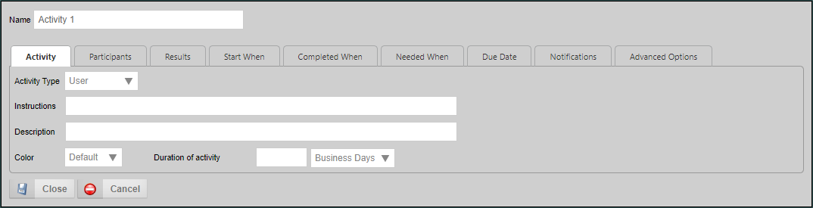
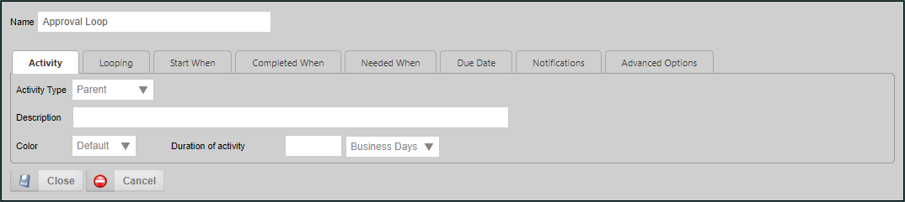
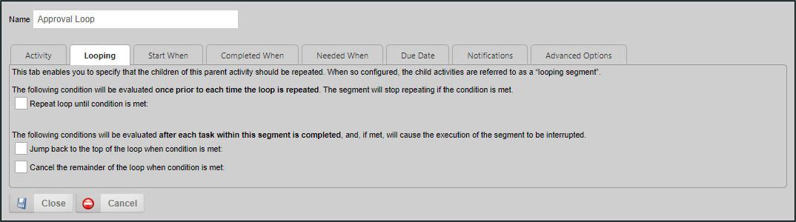
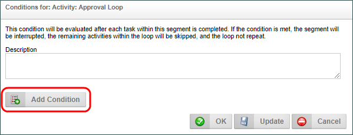
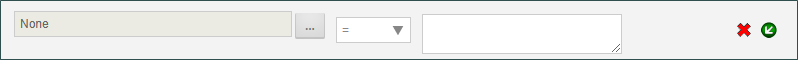
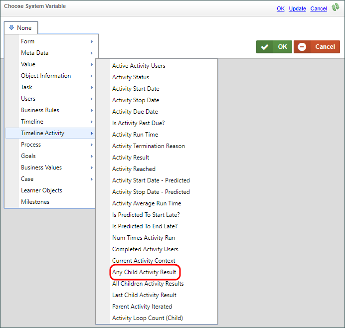
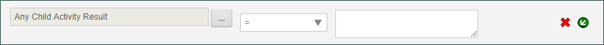
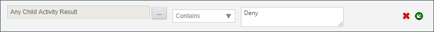
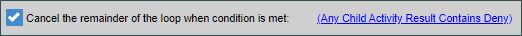
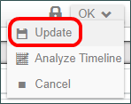

|
|
Lesson Contents | In this Lesson, you will learn how to configure a Parent activity in a Process Timeline. |
Now that we have a Process Timeline that is associated with our form, it's time to begin configuring the Process Timeline to model our approval process. So, let's open the Change of Student Major Timeline, and double-click Activity 1 to open the Properties dialog box for configuration.

We certainly don't want "Activity 1" to be the name for our activity, so the first thing we need to do is change the Name property to "Approval Loop". Next let's take a look at the Activity tab of the dialog box. If you click on the Activity Type dropdown, you can see that there are a number of activity types listed. For this lesson, we will concentrate on only two types of activity, the Parent Activity, and the User activity, though there are many other activity types. For now, suffice it to say that each activity type has different properties, and will display different configuration tabs in the dialog box. For this first activity, we want to select the Parent activity type. Note that, when you do, the tabs displayed in the dialog box will change to enable you to access the appropriate configuration options for this type of activity.

The Parent activity serves as a container for other activities. All of the activities contained inside a Parent activity are called "Children" or Child activities". In the case of the sample application we're building, the Parent activity will contain all of the User activities that will comprise our approval process as its Children. We're using this activity type because of a special feature found on the Looping tab of the dialog box.

Parent activities can be used to create loops within your Process Timeline. When configured this way, the Children are referred to as a “looping segment”. In other words, a segment of your Process Timeline that iterates, or loops. A looping segment will continuously loop through the child activities until a user-defined condition, or set of conditions, is satisfied.
The Looping tab contains three methods for controlling iteration through the child activities, each of which controls some aspect of how the looping segment will work by determining the conditions under which the following actions will occur:
In this particular case, we aren't really concerned with looping over and over, but we do want to exit the approval process if the change request is denied. After all, if the request is denied, there's no need to continue through the approval process. What we want to happen with our process is for the approval process to run once. If the change of major request is granted, the we want to go through all of the required steps in the process. But, if the request is denied in any activity, we want to immediately exit the parent Activity, and end the process.
So, of the three property options available to us, we only care about the third property, Cancel the remainder of the loop when condition is met. When you check the box for this property, a Click to create condition... link will appear. This link, when clicked, will open the Condition Builder , which we will use to set a condition that will cause the loop to exit when an approver rejects the request. Conditions are true or false statements that are evaluated in order to determine an appropriate response.
The Condition Builder that enables you to create conditions to test nearly any value you desire. You will see the Condition Builder in many different places, such as when to make a form field enabled or hidden, or what value to return from a Business Rule. The Condition Builder is usually invoked, as it is in this example, by an action link that is labeled Click to create condition.... Anywhere you see this link, you can open the Condition Builder by clicking on the link.
When the Condition Builder has been invoked, you may add a condition by selecting the Add Condition button.

Clicking on the Add Condition button will add a condition row to the Condition builder that we can configure.

In this case, we want to create a condition that will check to see whether the result of any of the child activities we will create contain the word "Deny". If so, we want to exit the loop completely, Since the loop will contain all of our approval User activities, if an approver denies the change, the approval loop will end, and no other approvers will be assigned any tasks.
To configure the condition we need to start by clicking the Build button:  . This button open the Choose System Variable dialog box to enable us to select the condition we want to test. From the Menu button in the dialog box, we will select Timeline Activity >> Any Child Activity Result.
. This button open the Choose System Variable dialog box to enable us to select the condition we want to test. From the Menu button in the dialog box, we will select Timeline Activity >> Any Child Activity Result.

Once we have done so, we can click the OK button to save and close the dialog box and return to the Condition Builder. Now, in the Condition Builder, we can see the condition we want to test displayed in the condition box.

Next, we'll select the "Contains" operator from the dropdown, then type "Deny" in the results box. We have now created a condition that will check to see if any of the child activities we will create has a result that contains the word "Deny". If it does, the condition will return "true". Otherwise, it will return "false".

Now that we've configured the condition we want to test, we can click the OK button to close the Condition Builder, and, once we do, we can see our condition is now properly specified in the Cancel the remainder of the loop when condition is met property.

At this point, we've done all the configuration we need to do for the parent activity that will contain our approval loop. So, click the Close button for the Properties dialog box, and update the Timeline by selecting the Update option from the menu button at the top right portion of the screen.

In this lesson, we edited our Timeline to create a Parent activity, and set a condition that will govern the operation of our approval loop. Now that we have done so, our next lesson will cover creating and configuring the User activities we will need to model the approval loop for our Change of Major Request.